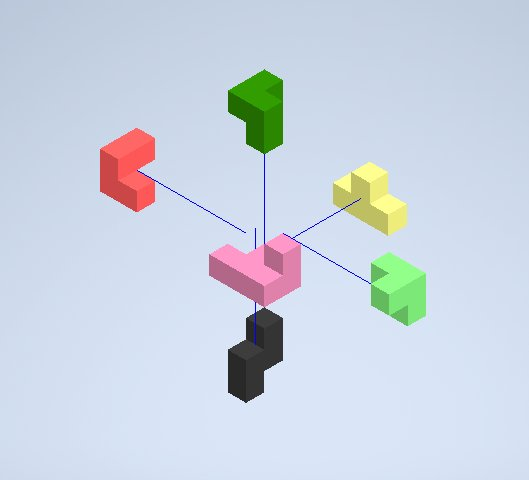

The assembled puzzle cube — six interlocking pieces forming a complete 3D cube
Overview
A local office furniture manufacturing company throws away tens of thousands of scrap ¾" hardwood cubes as a byproduct of its furniture construction process. Fine Office Furniture, Inc. wanted to return value to this waste product by using it as raw material for items sellable in their showroom. The brief: design, build, test, document, and present a 3D puzzle system made from the scrap cubes, with a challenge level appropriate for high school students.
Concept Sketches
Before modeling anything in Inventor, I sketched each of the six puzzle pieces by hand on isometric grid paper — working out how the individual cube units would stack and interlock to eventually form a complete cube.
Hand sketches for each of the six puzzle pieces, drawn on isometric grid paper before modeling in Inventor
Design Process
While designing the parts in Inventor, I learned how to sketch, extrude, and create detailed models of each puzzle piece. Once the individual pieces were modeled, I assembled every part into a complete puzzle cube using constraints like mate and flush.
Each of the six pieces modeled individually in Inventor: Black, Red, Yellow, Dark Green, Light Green, and Pink
Assembly
I learned how to create a presentation file with the fully assembled cube and generate an exploded view — allowing the design to be presented quickly and effectively.


Exploded assembly view and the fully assembled cube model in Inventor
Assembly walkthrough video
Documentation
I also learned how to create formal drawing files and format them to meet the project's documentation criteria — a full drawing sheet for each piece, plus a combined sheet for the whole assembly.
Formal Inventor drawing sheets — one per piece, plus the complete assembly
Pieces
The final cube was made of six interlocking pieces (Pink, Red, Yellow, Black, Light Green, and Dark Green), each individually modeled, sketched, and drawn in Inventor before being assembled into the final puzzle.